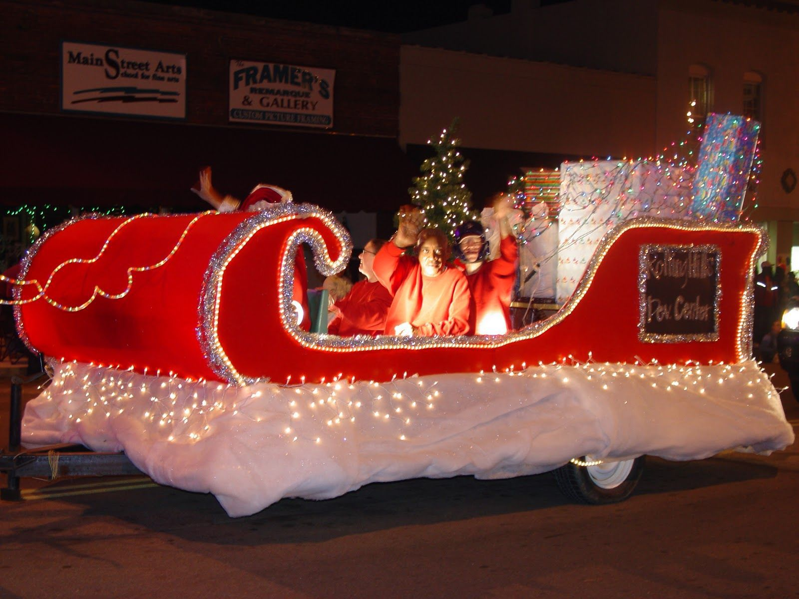
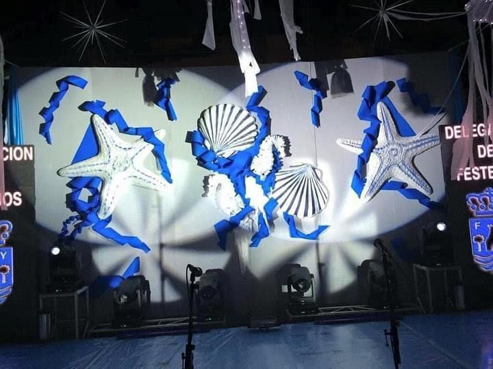
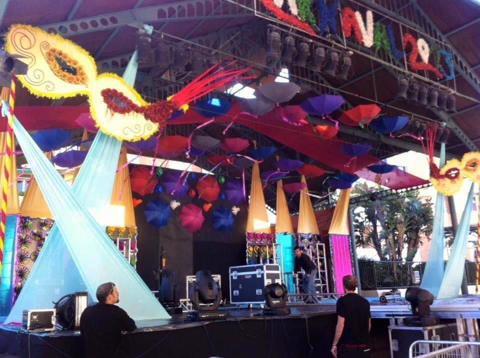
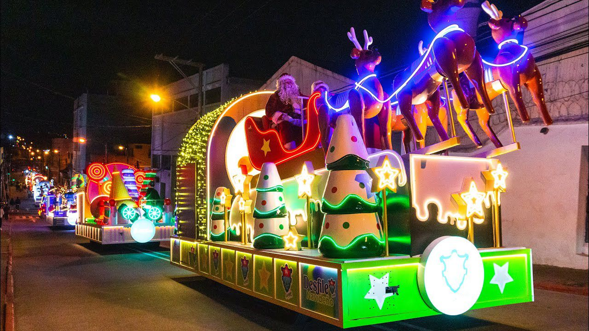
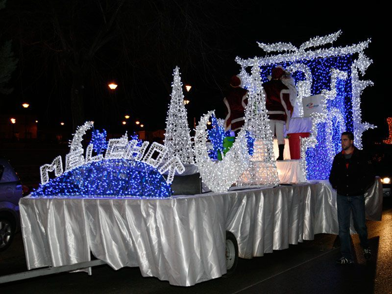
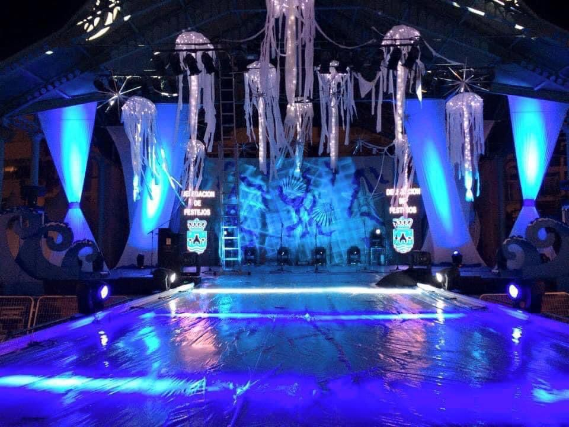

Decoración escénica
Carrozas y escenarios
Decoración de carrozas, escenarios y espacios protagonistas para que cada evento tenga presencia visual, coherencia y efecto sorpresa.
Pedir presupuestoServicio disponible en un radio de 100 km desde Málaga.
Impacto visual
Espacios preparados para lucir
Un escenario o carroza debe verse bien desde todos los ángulos, resistir el ritmo del evento y transmitir la temática desde el primer vistazo.
- Decoración de carrozas para desfiles y celebraciones.
- Ambientación de escenarios para fiestas, galas y espectáculos.
- Elementos decorativos adaptados al espacio y temática.
- Montaje y desmontaje coordinado.
- Refuerzo visual para photocall, entrada o zona principal.
Trabajos realizados
Montajes con presencia
Cuando haya fotos reales de carrozas o escenarios, esta página puede enseñarlas para reforzar mucho más la confianza.
Preguntas frecuentes
Dudas sobre carrozas
- ¿Qué datos hacen falta?
Medidas aproximadas, fotos, lugar, fecha, temática y horario disponible para montar. - ¿También decoráis escenarios?
Sí, se preparan carrozas, escenarios, entradas y zonas principales del evento. - ¿Trabajáis fuera de Málaga?
Este servicio se realiza en un radio aproximado de 100 km desde Málaga.
Fotos reales
Escenarios y montajes grandes
Fotos reales de estructuras, escenarios y decoración visual de gran formato.
.jpeg)
.jpeg)

.jpeg)





